Интерфейс — общая граница между двумя функциональными объектами, требования к которой определяются стандартом; совокупность средств, методов и правил взаимодействия (управления, контроля и т. д.) между элементами системы.
Для того, чтобы быть полезными, мобильные приложения должны быть ориентированными на пользователя. Пользователи устанавливают ваше приложение, потому что хотят решить какие-то проблемы. Таким образом, приложение имеет ярко выраженную «целеустремленность» Подумайте о том, чего ваши пользователи будут пытаться достичь и сосредоточьтесь на их основных целях. Уберите с их пути все препятствия.
Также при разработке интерфейса разработчики должны принести ясность в свой UI. Чтобы эффективно решать свои задачи, используя ваш интерфейс, люди должны понимать, как его использовать. Там просто не должно быть места для путаницы.
Таким образом, при разработке интерфейса мобильного приложения стоит следовать следующим правилам:
Используя эти правила можно разработать хороший графический интерфейс для вашего приложения. А для создания самих прототипов графического интерфейса можно использовать множество специализированного ПО, таких как Figma, Mockplus, InVision и другие. Многие из них имеют в своём составе множество оформленных по всем стандартам элементов управления и помогут более эффективно строить интерфейс.
Элементы управления - это доступные для манипулирования самодостаточные экранные объекты, посредством которых люди взаимодействуют с цифровыми продуктами. Элементы управления (controls, другое название - widgets - сокращение от windows gadgets - оконные приспособления) - это базовые строительные блоки графического пользовательского интерфейса.
Рассматривая элементы управления с учетом целей пользователя, их можно разбить на четыре основные категории:
К этим элементам относятся кнопки, кнопки-значки, гиперссылки.
Кнопка - удобный и привлекательный с визуальной точки зрения элемент управления. Весь ее облик подсказывает, что на нее можно нажать, и это характеризует ее ожидаемое назначение. Рекомендуется изменять внешний вид нажатой кнопки, так как это облегчает понимание работы программы пользователем.
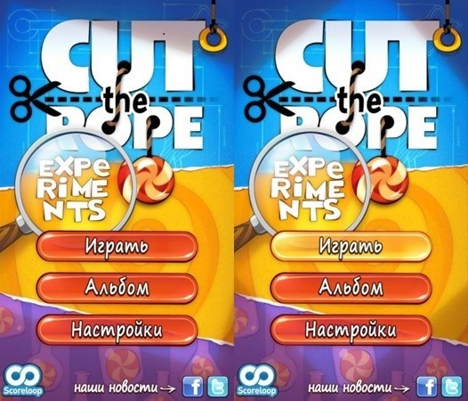
Кнопки, помещенные на панель инструментов, обычно становятся квадратными, теряют текстовую надпись и обзаводятся пиктограммой - пояснением в виде графического значка. Считается, что кнопки-значки очень удобны: они постоянно на виду и взаимодействовать с ними проще, чем с элементами раскрывающегося меню. Поскольку они постоянно видны, то легко запоминаются. У большинства пользователей не возникает вопросов относительно ожидаемого назначения кнопки. Проблема в том, что изображение на кнопке иногда бывает непонятным. Например, пиктограмма с изображением дискеты, традиционно обозначающая сохранение, часто непонятна молодым пользователям, которые никогда не работали с реальными дискетами.
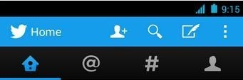
Текстовые гиперссылки - распространенный способ навигации в сети и веб-приложениях, однако при программировании для мобильных устройств их следует избегать. Дело в том, что попасть по ссылке пальцем с первого раза часто затруднительно и пользователей раздражает необходимость повторения этих действий.
Элементы выбора позволяют пользователю выбрать из группы допустимых объектов тот, с которым будет совершено действие. Элементы выбора применяются также для действий по настройке. Распространенными элементами выбора являются флажки и списки.
Назначение флажка очевидно. Щелкнув по флажку, пользователь немедленно увидит появившуюся галочку. Флажок прост, нагляден и изящен, однако основан на тексте. Качественный текст может исключить возможность неоднозначного толкования флажка. Однако этот же поясняющий текст вынуждает пользователя замедляться для прочтения, а также занимает значительное экранное пространство. Традиционно флажки имеют квадратную форму. Не забывайте, что пользователи распознают визуальные объекты по форме, и квадратная форма флажков - важный стандарт.
Существует возможность сделать флажок более наглядным, применив в качестве основы кнопку-значок, которая может фиксироваться в нажатом состоянии. Такой элемент называется выключателем.
Кнопки-триггеры - это разновидность элементов управления. Они призваны экономить экранное пространство, к сожалению, ценой значительной дезориентации пользователя. Классический пример - размещение на одной кнопке функций воспроизведения и паузы для музыкального проигрывателя. Подводным камнем такого подхода является то, что элемент управления можно ошибочно посчитать индикатором состояния проигрывателя ("на паузе" или "идет воспроизведение"). Элемент управления может служить либо индикатором состояния, либо кнопкой переключения состояний, но не тем и другим одновременно.
Радиокнопки внешне похожи на флажки, но являются взаимоисключающими, то есть выбор одного из вариантов автоматически аннулирует предыдущий выбор. В каждый момент времени может быть выбрана только одна кнопка. Радиокнопки всегда объединяются в группы из двух или более радиокнопок, причем в каждой группе одна радиокнопка всегда выбрана. Радиокнопки всегда круглые по той же причине, по которой флажки всегда имеют квадратную форму: именно такими они были изначально.
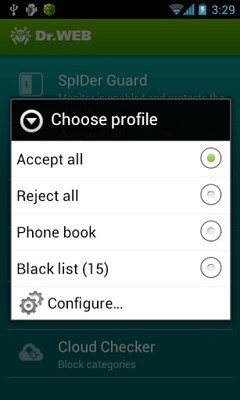
Элементы управления типа "список" позволяют осуществлять выбор из конечного множества текстовых строк, каждая из которых представляет команду, объект или признак. Подобно радиокнопкам, списки - мощный инструмент, упрощающий взаимодействие за счет устранения возможности неправильного выбора. Списки - это небольшие текстовые области с полосой прокрутки, автоматически подключаемой при необходимости.
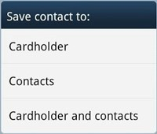
Комбо-элементы представляют собой сочетание элементов. Комбокнопка - разновидность радиокнопки со значком. Обычно она выглядит как кнопка-значок с небольшой стрелкой, но если нажать на стрелку и удерживать ее в нажатом состоянии, разворачивается меню. Комбо-список представляет собой сочетание списка и поля редактирования.
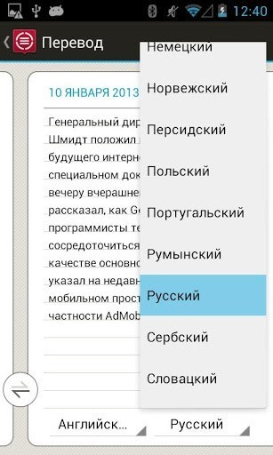
Элементы ввода дают пользователю возможность не только выбирать существующие сведения, но и вводить новую информацию. Самый простой элемент - поле редактирования текста (поле ввода). В эту категорию попадают также такие элементы управления, как счетчики и ползунки.
Счетчик состоит из небольшого поля ввода и двух прикрепленных к нему кнопок. Благодаря счетчикам грань между ограничивающими и неограничивающими элементами ввода данных становится размытой. Маленькие кнопки со стрелками позволяют пользователю изменять значение в поле редактирования небольшими шагами. Эти шаги могут выполняться до определенного предела: значение не может превысить максимум, установленный программой, или стать меньше установленного минимума. Если пользователь пожелает ввести определенное число, он может сделать это за счет прямого ввода числа в поле редактирования.
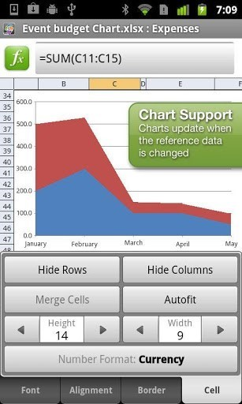
Рукоятки и ползунки очень эффективно расходуют экранное пространство, и оба этих элемента управления замечательно справляются с задачей обеспечения визуальной обратной связи по настройкам. Ползунки и рукоятки применяются в основном в качестве ограничивающих элементов управления ввода. Например, ползунки - превосходное средство для действий, связанных с масштабированием.
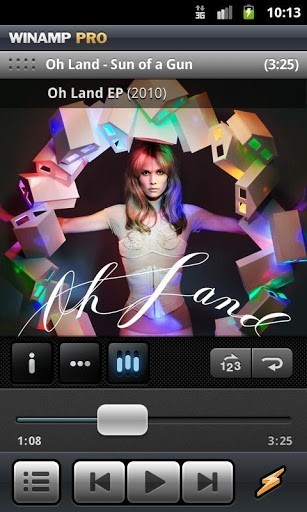
Вероятно, самый простой элемент управления отображением - элемент вывода текстовой информации, который отображает текстовое сообщение в некоторой позиции на экране. Он предоставляет текстовые метки для других элементов управления и выводит данные, которые не могут или не должны быть изменены пользователем. Единственная серьезная проблема этого элемента состоит в том, что он зачастую используется там, где должны присутствовать элементы ввода (и наоборот).
Полосы прокрутки служат важной цели - они позволяют осмысленным образом помещать большие объемы информации внутри рамок окон и панелей. К сожалению, они расходуют экранное пространство и ими сложно манипулировать. Однако замечательное преимущество полосы прокрутки состоит в создании контекста текущего положения в окне. Бегунок полосы прокрутки указывает текущее положение и нередко «масштаб» территории доступной для прокрутки.
Разделители - удобный инструмент для разделения главного окна приложения на несколько связанных между собой панелей, в каждой из которых можно просматривать, изменять или переносить ту или иную информацию. Подвижные разделители всегда должны сообщать о своей подвижности посредством изменения формы курсора.
Выдвижные панели - это панели приложения, которые можно открывать и закрывать в одно действие. Выдвижные панели - замечательное место для элементов управления и функций, которые используются совместно с основной рабочей областью приложения, но не столь часто.
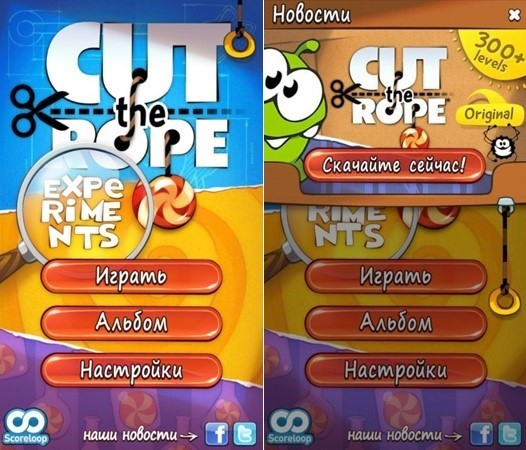
При разработке мобильных приложений необходимо выработать привычку отделять ресурсы приложения от кода. К ресурсам приложения могут относиться: изображения, строки, цвета, компоновки элементов пользовательского интерфейса (layout) и т. д. Отделение ресурсов от кода позволяет использовать альтернативные ресурсы для различных конфигураций устройств: язык, разрешение экрана и т. д. Для обеспечения совместимости с различными конфигурациями, ресурсы необходимо сгруппировать в директории по типу ресурсов и конфигурации устройства, полученные директории поместить в папку res/. Для любого типа ресурсов можно определить две группы. Первая определяет ресурсы, которые будут использоваться независимо от конфигурации устройства или в том случае, когда под конфигурацию нет подходящих альтернативных ресурсов. Эта группа называется ресурсы по умолчанию (default). Вторая группа определяет ресурсы, подходящие для определенной конфигурации устройства, размещается в директории с названием, обозначающим данную конфигурацию. Такие ресурсы называются альтернативными.
Каждый тип ресурсов необходимо размещать в специальной поддиректории папки res/. Рассмотрим основные из этих поддиректорий:
Следует отметить, что файлы ресурсов нельзя размещать в папку res/ напрямую, они обязательно должны размещаться в соответствующем каталоге, иначе будет выдана ошибка компиляции.
Для мобильных приложений главным ограничением является размер экрана устройства. Очень часто невозможно разместить все элементы полнофункционального приложения так, чтобы их можно было увидеть одновременно. Очевидным решением этой проблемы является разделение интерфейса на части по какому-либо принципу. Основные пути решения этой проблемы:
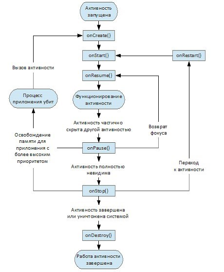
Фактически активность может существовать в одном из трех состояний:
Приложения, содержащие несколько активностей, используются в самых разных сферах. При проектировании такого приложения следует уделить большое внимание распределению его функционала по разным активностям. С одной стороны, не стоит перегружать экран информацией, а с другой - нужна ли активность, содержащая только одно поле для ввода? Может быть, стоит ее заменить диалоговым окном? Существует два основных способа переключения между активностями:
Существует ряд правил расположения интерфейсных элементов в зависимости от их важности. Так, кнопку, выполняющую важное действие (например, отправку письма), не стоит располагать в том месте, где она может быть случайно нажата. В то же время управляющие элементы, используемые наиболее часто, должны быть расположены наиболее удобным для нажатия образом. Скорее всего, перемещение между активностями будет использоваться не очень часто, поэтому рекомендуется располагать кнопки, управляющие этими действиями, в верхней части экрана. Одновременно с этим неплохо продублировать нажатия кнопок перелистыванием между активностями.
Существует способ разместить на активности больше элементов, чем одновременно помещается на экран, иными словами, отображать по очереди несколько экранов, используя только одну активность. В этом случае не нужно править файл манифеста - активность только одна. Однако для каждого экрана необходимо сделать свой xml-файл с его описанием. Такой способ размещения элементов удобен и программисту, и пользователю. Разработчик может организовать перемещение между частями активности и с помощью кнопок, и с помощью перелистывания.
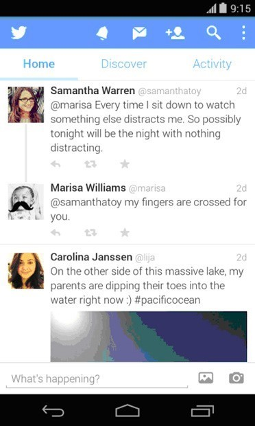
Объекты-экземпляры класса Intent используются для передачи сообщений между основными компонентами приложений. Известно, что три из четырех основных компонентов: активности, сервисы и приемники широковещательных сообщений, могут быть активированы с помощью сообщений, которые называются намерениями. Такие сообщения являются инструментом позднего связывания компонентов одного или нескольких приложений. Экземпляр класса Intent представляет собой структуру данных, содержащую описание операции, которая должна быть выполнена, и обычно используется для запуска активности или сервиса. В случае с приемниками широковещательных сообщений объект Intent содержит описание события, которое произошло или было объявлено.
Для каждого типа компонентов существуют свои механизмы передачи намерений.
В каждом случае система Android в ответ на намерение находит соответствующий компонент: активность, сервис или множество широковещательных приемников и запускает его если необходимо. В этой системе сообщений не случается накладок: сообщение-намерение, отправленное определенному компоненту, будет получено именно этим компонентом и никем другим.
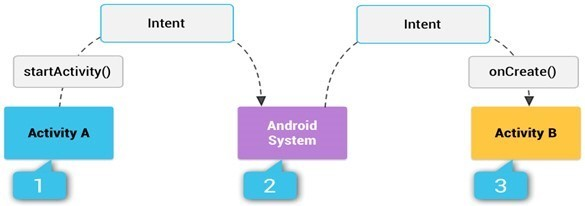